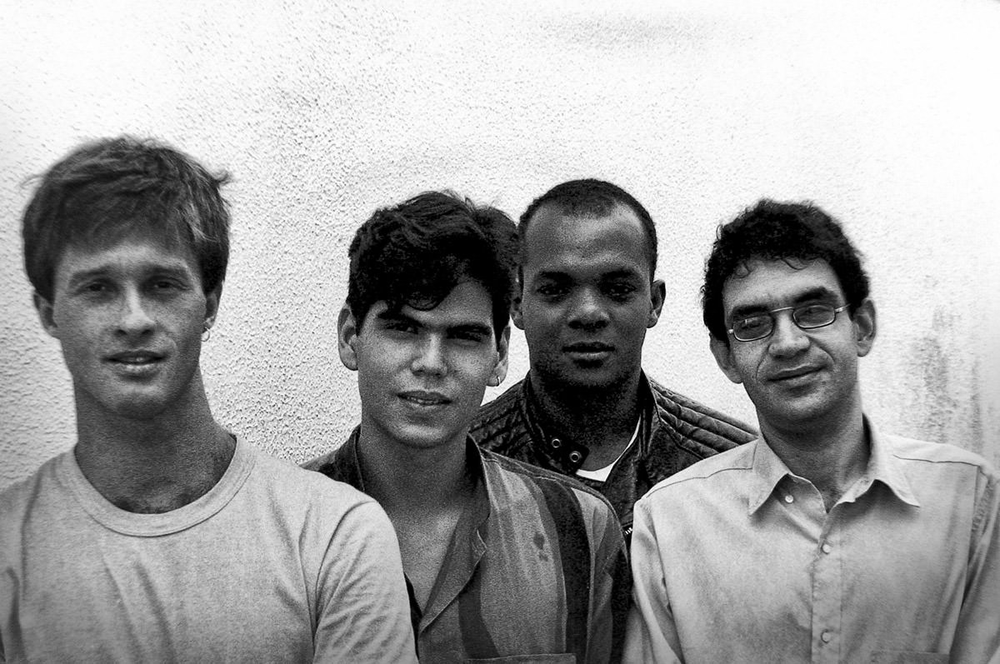

Marcelo Bonfá – Marcelo (Augusto) Bonfá é um baterista brasileiro e fundou a Legião com Renato em 1982, após ter também participado da cena de Brasília com as bandas ‘Blitz 64’ e ‘Dado e o Reino Animal’. Hoje segue carreira solo.
Eduardo Paraná (Kadu Lambach) – Convidado por Renato Russo para integrar a Legião Urbana, o virtuoso guitarrista tocava na banda Boca Seca e praticamente saiu da Legião por “tocar muito bem” para uma banda punk, segundo explicou o próprio Renato em entrevista à MTV. Tocou com diversos artistas da MPB e se prepara para lançar seu primeiro disco solo.
Paulo Paulista – Foi tecladista da primeira formação da banda, participando do histórico primeiro show, em um festival em Patos de Minas. Também tocou na banda brasiliense Finis Africae.
Ico-Ouro Preto – Guitarrista e irmão de Dinho Ouro Preto (vocalista do Capital Inicial). Também atuou na Legião Urbana por quase um ano, participando da composição da música “Ainda é cedo”, mas não gostava dos palcos e se afastou da carreira. Hoje trabalha como fotógrafo na Europa.
Villa-Lobos – Eduardo Dutra (Dado) Villa-Lobos, nascido em Bruxelas, na Bélgica, é sobrinho-neto do compositor clássico Heitor Villa-Lobos. Foi o criador da banda ‘Dado e o Reino Animal’, e assumiu a guitarra da Legião em 1983, no lugar de Ico Ouro-Preto. Hoje segue carreira solo.
Renato Rocha (Negrette) – Renato Rocha foi baixista e compositor da Legião Urbana, gravando os baixos dos três primeiros discos. As clássicas “Daniel Na Cova dos Leões” e “Quase sem Querer” são parcerias suas com Russo. Antes, integrou as bandas ‘Hosbond Kama’ e ‘Dents Kents’. Em 1983 foi integrar a Legião, que precisava de um baixista para gravar o primeiro disco.